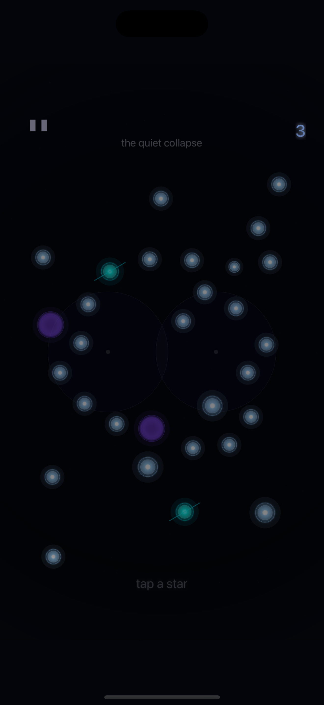
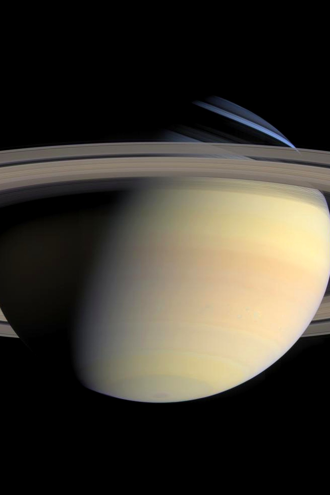
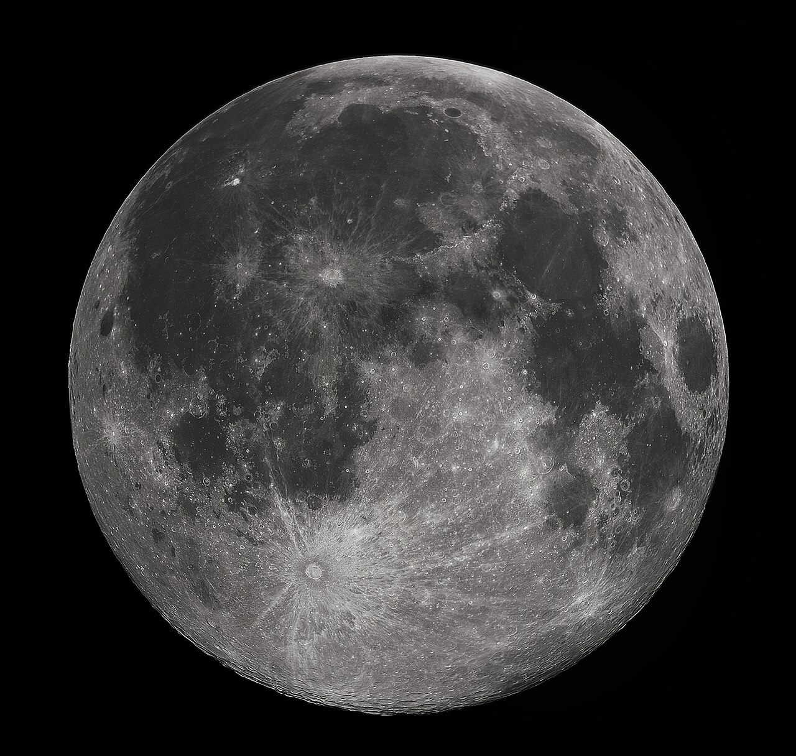
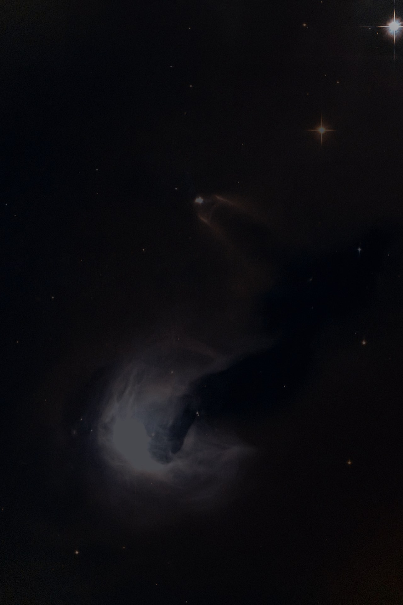
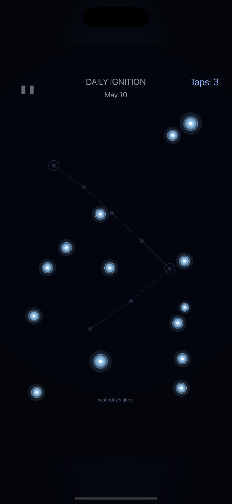
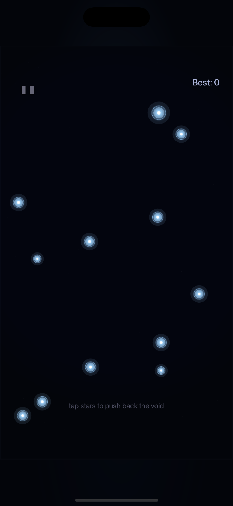
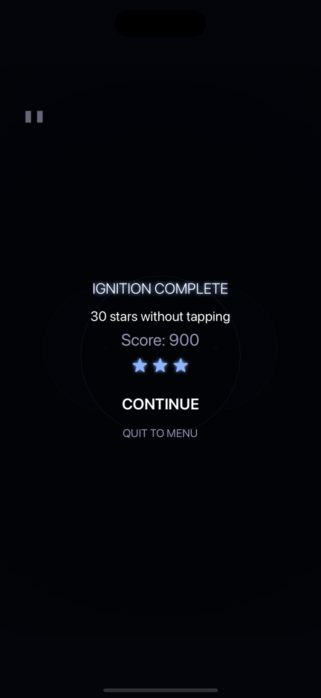

Ignite
Choose the first star and commit. The board answers with light, sound, haptics, and a visible fuse window.
Premium cosmic puzzle game for iPhone and iPad
Ignite one star, bend the chain through gravity and dark matter, then watch the field resolve into silence.

 Earth
Earth
 Crab
Crab

SaturnFUSE is a one-tap chain reaction game with readable star grammar: standard stars carry the route, pulsars rotate pressure, dark stars absorb energy, and gravity wells curve the outcome.
Choose the first star and commit. The board answers with light, sound, haptics, and a visible fuse window.
Fragments cross the field, bend around wells, reflect through neutron stars, and bridge distant clusters.
A clean cascade ends with a deliberate pause so the result reads before the next puzzle asks for your hand.
The game keeps live puzzle stars bright and distinct, while themes stay in menus and galleries so the playfield never fights your fingers.
Bright, image-led cosmic scenes frame the menus, galleries, and premium surfaces. The playable field stays dark and precise so the stars remain unmistakable.



FUSE moves between authored puzzles, one shared daily board, and longer pressure runs, all built around fast retries and clear cascade feedback.
Six constellations and sixty authored puzzle fields.

A deterministic daily field with one clean attempt.

Escalating cascades, recovery pressure, and long chains.

FUSE uses real cosmic theme art outside gameplay, high-contrast stars inside gameplay, optional rewarded ads, StoreKit purchases, and local-first progress. The legal pages are linked directly below for App Store and player review.